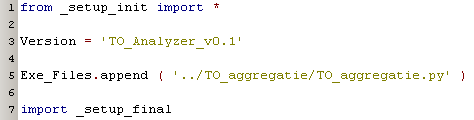
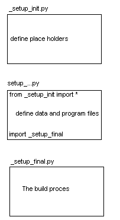
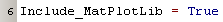
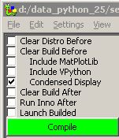
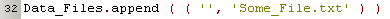
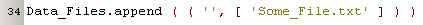
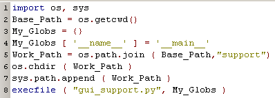
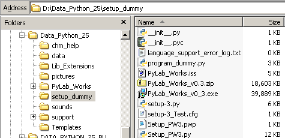

Deployment  ( june 2009 )
( june 2009 )
Application Designer / Domain Expert / Control Designer / Core Developer
Introduction
Because most programs are build dynamically, simply using py2exe to build a distro doesn't work. Besides that a lot of standard packages are very hard to include in a distro. Therefor we build an easy to use tool with a graphical user interface that does all the hard work.
|
The principle of the building process is shown on the right. The _setup_init.py creates the place holders for defining the executable program and for the specific files we want to include in our distro. This file is a standard part of the deployment program and should never be changed. The _init_final.py contains the actual build process and all the hard to discover problems of the specific standard packages. This file is part of the standard environment of the deployment package and should only be changed if new hard to deploy standard packages are added. This program is intensively controlled by the GUI of the deployment program. The setup_.....py is the deployment definition of the program to be distributed. The top line and the bottom line links this definition to the final build process. This file can be as simple as defining the executable file and preferable a version, which will be used to name the created install files. Below an example  |
 |
Configuration
Most of the configuration settings of the build process can be done by the checkboxes in the GUI. In fact if more settings are needed, you should extend the checkboxes and implement the new setting in the same way.
|
The top part ( not indented ) are settings / actions that take place before py2exe is started. The bottom part ( not indented ) are settings that will influence the process, after py2exe has done the job. The middle part ( indented ) are settings that influence the py2exe process directly. These settings can be overriden in the user setup file. For instance if you want always to include MatPlotLin in this specific distro, add the following line in your setup file:  The name of the variable is exactly like the label of the checkbox, except for ignoring leading spaces and replacing the other spaces with underscores. |
 |
Configuration Switches
|
Clear Shell Before |
Clears the shell logging window at the bottom, so it will only contain the notes of the current run |
|
Clear Distro Before |
Clear Distro Directory, the directory itself is not removed, so you can safely leave a DOS box pointing to that directory. |
|
Clear Build Before |
Delete the build directory before running the build process |
|
Remove PYC Files |
Remove ALL pyc and pyo files from the whole Python project tree |
|
Garantee INIT Files |
Garantee that all subdirectories will contain an __init__ file, by copying it from the setup directory |
|
Include Dummy Imports |
Append "dummy_imports.py" to the Exe_Files. |
|
Include MatPlotLib |
Needed to include MatPlotLib files that aren't detected by Py2Exe |
|
Include VPython |
Needed to include VPython files that aren't detected by Py2Exe |
|
Condensed Display |
If checked, just a brief logging appears |
|
None Console Application |
Check it, if you don't want that ugly DOS box |
|
Clear Build After |
Delete the build directory after running the build process |
|
Rebuild Inno |
Rebuild the Inno setup file, needed change things like version information |
|
Run Inno After |
Run Inno Setup after the Py2Exe build process |
|
Launch Builded |
Launch either the Inno Setup File ( if created) or the executable from the distro directory |
Build Script
Important: In specifying datafiles, it's important that the second parameter in the tupple ( <realative destination>, [ files] ) is a list, even if you want to copy just 1 file.
wrong: 
OK: 
Introduction
Because PyLab_Works is a very dynamical program, a standard run of py2exe will fail. So we use a trick to get a good windows binary distro: add an extra dummy program that does nothing, but imports all libraries. There's another reason why we don't want py2exe to compile our programs, we want to distribute the sources and not the compiled pyc-files. Therefor we don't let py2exe create exe-files from our programs directly, but we use a small startup python file, that starts the real application dynamically.
Here is the program "_launch_gui_support.py", that will dynamically launch the real program "support/gui_support.py"
This program is generated by Setup_PW3.py.


setup-3.py
This is the GUI for the distribution, very pre-mature.
Setup_PW3.py
Contains everything to make both the full Inno-installer for windows and a zipped archive with the sources only.
Deploy.py
This program performs the following taks: